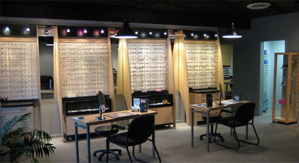

Contact lens evaluations
Contact lens care is a separate part of a comprehensive eye examination. The doctors specialize in hard and soft lenses, including bifocal contact lenses.
Serving Mendocino County since 2003
Joe A. Vargas, O.D. and Antonio F. Moran, O.D. provide comprehensive vision care from their Ukiah practice, including specialized contact lenses and protective eyewear.
Appointments are arranged by phone. Please call the practice to find a time that works for you.

The optical showroom at the Ukiah practice.
Services
This facelift brings the practice's established service information forward in a format that is easier to scan on a phone.
Contact lens care is a separate part of a comprehensive eye examination. The doctors specialize in hard and soft lenses, including bifocal contact lenses.
Protective sports eyewear is designed differently from everyday fashion frames. The staff can help match protection and visual performance to your activity.
The practice evaluates prescription and non-prescription safety eyewear needs for work, home, hunting, motorcycle riding, and other activities.
Dr. Vargas and Dr. Moran can evaluate your vision and discuss whether LASIK or another refractive procedure may be appropriate.
Service descriptions are condensed from the practice's current website. Please call to confirm availability and what is appropriate for your visit.
Our doctors
Two established doctors, one Ukiah practice, and a shared focus on understandable, personal eye care.
Read the current practice biographyDr. Vargas has served Mendocino County since 2003. He earned his B.A. from UC Davis and Doctor of Optometry degree from the University of Houston, then returned to Ukiah to open his private practice. He especially values caring for area youth and Spanish-speaking patients.
A UC Berkeley School of Optometry graduate, Dr. Moran is bilingual in English and Spanish and has 18 years of comprehensive vision-care experience. His approach emphasizes questions, clear explanations, and collaboration.
Patient resources
Download the patient history form currently provided by the practice. Insurance participation and benefits can change, so call 707-462-8363 to confirm current coverage and what to bring.
Contact
Call the office to ask a question or request an appointment. The practice can confirm current services, coverage, and scheduling details.
Call the practice 707-462-8363Please call before visiting to confirm appointment availability and office access.